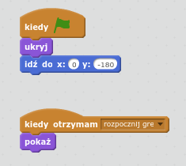
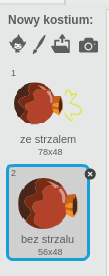
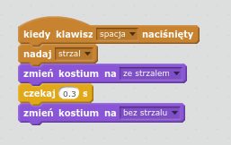
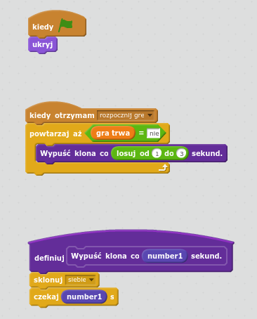
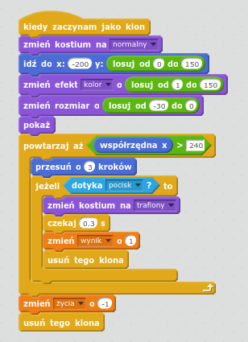
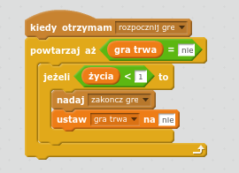
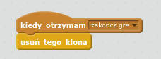

Wstęp
Dzisiaj będziemy programować grę, w której zadaniem gracza będzie zestrzelenie wrogich statków kosmicznych za pomocą działa.
Krok 1: Wczytaj zasoby
Zadania do wykonania
-
Utwórz nowy projekt i nazwij go "Kosmiczny obrońca"
-
Pobierz zasoby dla tego projektu ma swój komputer.
-
Z menu "Plik" wybierz opcję "Wczytaj ze swojego komputera".

-
Powinieneś teraz mieć do dyspozycji przygotowaną scenę i duszki dla tego projektu.
Zapisz swój projekt
Krok 2: Rozpoczęcie gry!
Zadania do wykonania
-
Gra będzie rozpoczynała się od kliknięcia na przycisk "Start". O tym, czy gra się rozpoczęła będzie informować nas zmienna "gra trwa". Musimy dodać taką zmienną.
-
Ok, teraz czas na dodanie skryptów dla naszego przycisku. Po kliknięciu na zieloną flagę przycisk powinien pojawić się na scenie. Następnie po kliknięciu w niego, nadany zostanie odpowiedni komunikat i zmieniona wartość zmiennej "gra trwa" na "tak". Wreszcie na samym końcu sprawimy, że po otrzymaniu komunikatu o rozpoczęciu gry przycisk schowa się.
-
Przetestuj swój projekt. Czy przycisk pojawia się po rozpoczęciu gry? Czy reaguje na kliknięcie? Czy zmienna "gra trwa" zmienia swoją wartość?
Zapisz swój projekt
Krok 3: Działo
Zadania do wykonania
-
Każde działo musi mieć podstawę. Sprawmy, że po kliknięciu na zieloną flagę podstawa zniknie, a po rozpoczęciu gry pokaże się na odpowiedniej pozycji. Oto jak powinny wyglądać skrypty dla podstawy: 
-
Teraz kolej na działo! Działo również powinno zniknąć kiedy klikniesz na zieloną flagę i pojawić się dopiero po rozpoczęciu gry. W tym celu należy dodać do niego odpowiednie bloki kodu. Co więcej - działo zawsze powinno być zwrócone w kierunku wskaźnika myszy i mieć odpowiedni kostium. W tym celu powinineś dodać następujący kod dla działa:
-
Sprawdź, czy Twoje działo posiada takie kostiumy:

-
Jeżeli tak, możemy oprogramować strzał. Strzał będzie się odbywał po naciśnięciu "spacji". Wtedy działo nada odpowiedni komunikat, zmieni kostium, odczeka chwilę i wróci do pierwotnego kostiumu. To prosty kod, będzie wyglądał mniej więcej tak:

Zapisz swój projekt
Krok 4: Ufo
Zadania do wykonania
-
Tym razem zaczniemy od zdefiniowania nowego bloku dla statku kosmicznego. Statek będzie co kilka sekund klonował się i wykonywał określone akcje jako klon. Możemy więc zdefiniować nowy blok, w którym określimy procedurę klonowania. Skorzystaj z formularza nowego bloku:
-
Przygotuj blok, który będzie nazywał się "Wypuść klona co X sekund". Zamiast X będziesz musiał wstawić pole odpowiedniego typu. To będzie parametr, który będziemy przekazywać do nowego bloku. Co więcje, musimy sprawić, żeby ufo znikało na początku gry i pojawiało się dopiero, jak nadamy komunikat "rozpocznij grę". Wtedy, tak długo jak długo zmienna "gra trwa" nie będzie równa "nie", ufo będzie klonowało się korzystając z naszego nowego bloku. Tak powinine wyglądać gotowy kod:

-
Teraz trzeba oprogramować zachowanie statku kosmicznego po sklonowaniu. Powinien on przede wszystkim wybrać dla siebie losową pozycję przy lewej krawędzi ekranu, zmienić rozmiar i kolor kostiumu, żeby poszczególne statki różniły się między sobą, a następnie rozpocząć lot w kierunku prawej krawędzi ekranu.
Będziemy też potrzebować nowych zmiennych: "życia" i "wynik".
Jeżeli na swojej drodze ufo napotka pocisk, powinno zmienić kostium, dodać jeden punkt do wyniku i zniknąć.
Jeżeli natomiast dotrze do prawej krawędzi nietrafione przez pocisk, odejmiemy jedno życie.

Zapisz swój projekt
Krok 5: Pocisk
Zadania do wykonania
-
Pocisk powinien ukryć się po rozpoczęciu gry i sklonować siebie, kiedy otrzyma komunikat "strzał".
-
Kiedy już sklonujemy pocisk po naciśnięciu spacji, musimy jeszcze wysłać go w kierunku, w którym wskazywał kursor myszy. W tym celu musimy ustawić jego rozmiar, kierunek i nakazać mu lecieć w kierunku kursora. Można to zrobić za pomocą takiego kodu:
Zapisz swój projekt
Krok 6: Ustawianie danych początkowych i momentu zakończenia gry
Zadania do wykonania
-
Przejdźmy teraz do skryptów dla sceny. Musimy sprawić, żeby po wciśnięciu zielonej flagi liczba żyć i punktów zresetowała się.
Poza tym, scena będzie kontrolować ilość żyć. Jeżeli gra trwa, scena będzie czekać, aż ilość żyć spadnie poniżej jednego i nada komunikat o końcu gry.

-
Na nowy komunikat powinno zareagować ufo. Jeśli gra się skończyła, wszystkie statki kosmiczne muszą zniknąć ze sceny. Przejdź do skryptów dla duszka "ufo" i dodaj taki kod:

-
I jeszcze jedno. Dodajmy nową zmienną, którą będziemy przechowywać w chmurze, nazwijmy ją "rekord". Pamiętaj, żeby zaznaczyć opcję "Cloud variable":
Po odebraniu komunikatu o zakończeniu gry nasze działo powinno wyświetlić graczowi stosowny komnunikat i zapisać jego wynik jako rekord, jeśli gracz zdobył więcej punktów niż obecny rekord:

Zapisz swój projekt
Zadania dodatkowe
-
Twoja gra nie ma dźwięków! Dodaj wybrane przez siebie dźwięki w momencie zestrzelenia statku i wystrzelenia pocisku. Może warto dodać muzykę w tle podczas trwania gry, albo fanfary na zakończenie?
-
Jeżeli chcesz, zmodyfikuj kostiumy duszków, możesz urozmaicić np. statki kosmiczne i losować kostium podczas tworzenia klona statku.
-
Spróbuj zwiększyć lub zmniejszyć prędkość pokazywania się nowych statków, albo wylosuj ją dla każdego z nich.